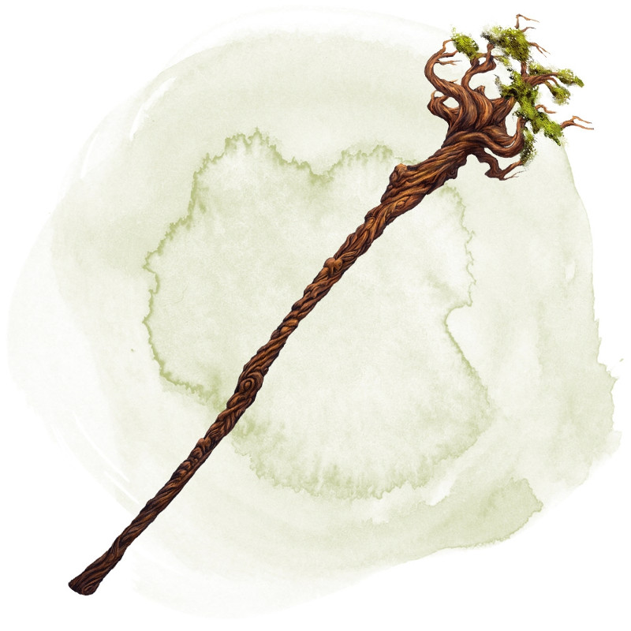

Bâton des forêts
Bâton, rare (nécessite un lien par un druide)
Ce bâton peut être manié comme un bâton magique qui octroie un bonus de +2 à l'attaque et aux dégâts. Lorsque vous le tenez, vous obtenez un bonus de +2 aux jets d'attaque des sorts.
Le bâton possède 10 charges pour les propriétés suivantes. Il récupère 1d6 + 4 charges dépensées chaque jour à l'aube. Lorsque vous dépensez la dernière charge, lancez un d20. Sur un 1, le bâton perd ses propriétés et devient un simple bâton non magique.
Sorts. Vous pouvez utiliser une action pour dépenser une ou plusieurs des charges du bâton et jeter l'un des sorts suivants depuis celui-lui, en utilisant le DD de sauvegarde de vos sorts : amitié avec les animaux (1 charge), éveil (5 charges), peau d'écorce (2 charges), localisation d'animaux ou de plantes (2 charges), communication avec les animaux (1 charge), communication avec les plantes (3 charges) ou mur d'épines (6 charges).
Vous pouvez également utiliser une action pour lancer le sort passage sans trace depuis le bâton sans utiliser aucune charge.
Forme d'arbre. Vous pouvez utiliser une action pour planter une extrémité du bâton dans de la terre fertile et dépenser une charge pour le transformer en un arbre sain. L'arbre fait 18 mètres de haut, son tronc fait 1,50 mètre de diamètre et ses branches s'étalent au sommet sur un rayon de 7,50 mètres. L'arbre apparaît ordinaire mais dégage une faible aura de magie de transmutation s'il est ciblé par détection de la magie. Tout en touchant l'arbre et en utilisant une autre action pour prononcer le mot de commande, vous pouvez faire reprendre au bâton sa forme normale. Toute créature dans l'arbre tombe alors.
Le bâton possède 10 charges pour les propriétés suivantes. Il récupère 1d6 + 4 charges dépensées chaque jour à l'aube. Lorsque vous dépensez la dernière charge, lancez un d20. Sur un 1, le bâton perd ses propriétés et devient un simple bâton non magique.
Sorts. Vous pouvez utiliser une action pour dépenser une ou plusieurs des charges du bâton et jeter l'un des sorts suivants depuis celui-lui, en utilisant le DD de sauvegarde de vos sorts : amitié avec les animaux (1 charge), éveil (5 charges), peau d'écorce (2 charges), localisation d'animaux ou de plantes (2 charges), communication avec les animaux (1 charge), communication avec les plantes (3 charges) ou mur d'épines (6 charges).
Vous pouvez également utiliser une action pour lancer le sort passage sans trace depuis le bâton sans utiliser aucune charge.
Forme d'arbre. Vous pouvez utiliser une action pour planter une extrémité du bâton dans de la terre fertile et dépenser une charge pour le transformer en un arbre sain. L'arbre fait 18 mètres de haut, son tronc fait 1,50 mètre de diamètre et ses branches s'étalent au sommet sur un rayon de 7,50 mètres. L'arbre apparaît ordinaire mais dégage une faible aura de magie de transmutation s'il est ciblé par détection de la magie. Tout en touchant l'arbre et en utilisant une autre action pour prononcer le mot de commande, vous pouvez faire reprendre au bâton sa forme normale. Toute créature dans l'arbre tombe alors.
Dungeon Master´s Guide (SRD)
